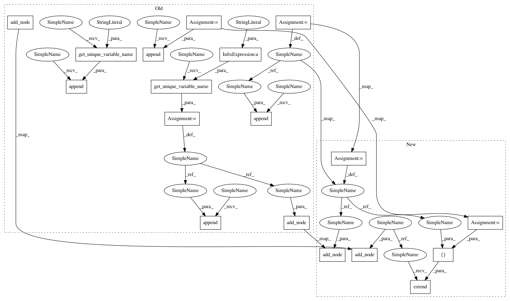

f801d3ed5c18c075b08157b5605396bc5154c3b2,onnxmltools/convert/coreml/operator_converters/neural_network/BidirectionalLSTM.py,,convert_bidirectional_lstm,#Any#Any#Any#,13
Before Change
name=scope.get_unique_operator_name("Reshape"), shape=[-1, 2 * hidden_size])
if len(operator.outputs) > 1:
lstm_y_h_name = scope.get_unique_variable_name(lstm_op_name + "_Y_h")
lstm_outputs.append(lstm_y_h_name)
lstm_y_h_reshape_name = scope.get_unique_variable_name(lstm_op_name + "_Y_h_reshape")
container.add_node("Reshape", lstm_y_h_name, lstm_y_h_reshape_name,
name=scope.get_unique_operator_name("Reshape"), shape=[2, hidden_size])
container.add_node("Split", lstm_y_h_reshape_name,
[operator.outputs[1].full_name, operator.outputs[3].full_name],
op_version=2, name=scope.get_unique_operator_name("Split"), split=[1, 1, ], axis=0)
else:
// Here we ingore ONNX RNN"s first output because it"s useless.
lstm_outputs.append(scope.get_unique_variable_name("isolated"))
// Handle the second output of ONNX LSTM. It will become the first and the second outputs of
// CoreML"s LSTM.
lstm_y_name = scope.get_unique_variable_name(lstm_op_name + "_Y")
lstm_outputs.append(lstm_y_name)
// Directly reshape ONNX LSTM"s 2nd output to CoreML LSTM"s 1st output.
container.add_node("Reshape", lstm_y_name, operator.outputs[0].full_name,
name=scope.get_unique_operator_name("Reshape"), shape=[1, 2 * hidden_size])
if len(operator.outputs) > 1:
lstm_y_reshape_name = scope.get_unique_variable_name(lstm_op_name + "_Y_reshape")
container.add_node("Reshape", lstm_y_name, lstm_y_reshape_name,
name=scope.get_unique_operator_name("Reshape"), shape=[2, hidden_size])
container.add_node("Split", lstm_y_reshape_name,
[operator.outputs[1].full_name, operator.outputs[3].full_name],
op_version=2, name=scope.get_unique_operator_name("Split"), split=[1, 1], axis=0)
// Output cell state if necessary
if len(operator.outputs) > 2:
lstm_y_c_name = scope.get_unique_variable_name(lstm_op_name + "_Y_c")
lstm_outputs.append(lstm_y_c_name)
lstm_y_c_reshape_name = scope.get_unique_variable_name(lstm_op_name + "_Y_c_reshape")
container.add_node("Reshape", lstm_y_c_name, lstm_y_c_reshape_name,
name=scope.get_unique_operator_name("Reshape"), shape=[2, hidden_size])
container.add_node("Split", lstm_y_c_reshape_name,
[operator.outputs[2].full_name, operator.outputs[4].full_name],
op_version=2, name=scope.get_unique_operator_name("Split"), split=[1, 1], axis=0)
// Create the major LSTM operator
container.add_node("LSTM", lstm_inputs, lstm_outputs, **lstm_attrs)
register_converter("biDirectionalLSTM", convert_bidirectional_lstm)
After Change
lstm_op_name = scope.get_unique_operator_name("LSTM")
lstm_attrs = {"name": lstm_op_name}
lstm_inputs = []
lstm_outputs = []
lstm_x_reshape_name = scope.get_unique_variable_name(lstm_op_name + "_X_reshape")
container.add_node("Reshape", operator.inputs[0].full_name, lstm_x_reshape_name,
name=scope.get_unique_operator_name("Reshape"), shape=[-1, 1, input_size])
lstm_inputs.append(lstm_x_reshape_name)
// Handle LSTM"s weight matrices
matrices_w_forward = np.concatenate([lstm_weights[0].inputGateWeightMatrix.floatValue,
lstm_weights[0].outputGateWeightMatrix.floatValue,
lstm_weights[0].forgetGateWeightMatrix.floatValue,
lstm_weights[0].blockInputWeightMatrix.floatValue])
matrices_w_backward = np.concatenate([lstm_weights[1].inputGateWeightMatrix.floatValue,
lstm_weights[1].outputGateWeightMatrix.floatValue,
lstm_weights[1].forgetGateWeightMatrix.floatValue,
lstm_weights[1].blockInputWeightMatrix.floatValue])
matrices_w_name = scope.get_unique_variable_name(lstm_op_name + "_W")
container.add_initializer(matrices_w_name, onnx_proto.TensorProto.FLOAT, [2, 4 * hidden_size, input_size],
np.concatenate([matrices_w_forward, matrices_w_backward]))
lstm_inputs.append(matrices_w_name)
// Handle LSTM"s recursion matrices
matrices_r_forward = np.concatenate([lstm_weights[0].inputGateRecursionMatrix.floatValue,
lstm_weights[0].outputGateRecursionMatrix.floatValue,
lstm_weights[0].forgetGateRecursionMatrix.floatValue,
lstm_weights[0].blockInputRecursionMatrix.floatValue])
matrices_r_backward = np.concatenate([lstm_weights[1].inputGateRecursionMatrix.floatValue,
lstm_weights[1].outputGateRecursionMatrix.floatValue,
lstm_weights[1].forgetGateRecursionMatrix.floatValue,
lstm_weights[1].blockInputRecursionMatrix.floatValue])
matrices_r_name = scope.get_unique_variable_name(lstm_op_name + "_R")
container.add_initializer(matrices_r_name, onnx_proto.TensorProto.FLOAT, [2, 4 * hidden_size, hidden_size],
np.concatenate([matrices_r_forward, matrices_r_backward]))
lstm_inputs.append(matrices_r_name)
// Handle bias vectors
vectors_b = np.zeros(shape=(2, 8, hidden_size))
if lstm_params.hasBiasVectors:
vectors_b[0, 0, :] = lstm_weights[0].inputGateBiasVector.floatValue
vectors_b[0, 1, :] = lstm_weights[0].outputGateBiasVector.floatValue
vectors_b[0, 2, :] = lstm_weights[0].forgetGateBiasVector.floatValue
vectors_b[0, 3, :] = lstm_weights[0].blockInputBiasVector.floatValue
vectors_b[1, 0, :] = lstm_weights[1].inputGateBiasVector.floatValue
vectors_b[1, 1, :] = lstm_weights[1].outputGateBiasVector.floatValue
vectors_b[1, 2, :] = lstm_weights[1].forgetGateBiasVector.floatValue
vectors_b[1, 3, :] = lstm_weights[1].blockInputBiasVector.floatValue
if lstm_params.forgetBias:
// One may think we should do something like b[0, 2, :] += 1. and b[1, 2, :] += 1.,
// but it"s not correct as CoreML has added 1 into those bias vectors.
pass
if lstm_params.hasBiasVectors or lstm_params.forgetBias:
vectors_b_name = scope.get_unique_variable_name(lstm_op_name + "_B")
container.add_initializer(vectors_b_name, onnx_proto.TensorProto.FLOAT,
[2, 8 * hidden_size], vectors_b.flatten())
lstm_inputs.append(vectors_b_name)
else:
lstm_inputs.append("")
// Due to the position sensitivity in ONNX argument parsing, we add an empty string for the non-existing
// sequence length
lstm_inputs.append("")
// Handle initial hidden state if necessary
if len(operator.inputs) > 1:
lstm_h_init_name = scope.get_unique_variable_name(lstm_op_name + "_h_init")
container.add_node("Concat", [operator.inputs[1].full_name, operator.inputs[3].full_name],
lstm_h_init_name, name=scope.get_unique_operator_name("Concat"), axis=0)
lstm_h_init_reshape_name = scope.get_unique_variable_name(lstm_op_name + "_h_init_reshape")
container.add_node("Reshape", lstm_h_init_name, lstm_h_init_reshape_name,
name=scope.get_unique_operator_name("Reshape"), shape=[2, 1, hidden_size])
// Add zero initializers to forward and backward initial hidden states so that they become optional
container.add_initializer(operator.inputs[1].full_name, onnx_proto.TensorProto.FLOAT,
operator.inputs[1].type.shape,
np.zeros(shape=operator.inputs[1].type.shape).flatten())
container.add_initializer(operator.inputs[3].full_name, onnx_proto.TensorProto.FLOAT,
operator.inputs[3].type.shape,
np.zeros(shape=operator.inputs[3].type.shape).flatten())
lstm_inputs.append(lstm_h_init_reshape_name)
else:
lstm_inputs.append("")
// Handle initial cell state if needed
if len(operator.inputs) > 2:
lstm_c_init_name = scope.get_unique_variable_name(lstm_op_name + "_c_init")
container.add_node("Concat", [operator.inputs[2].full_name, operator.inputs[4].full_name],
lstm_c_init_name, name=scope.get_unique_operator_name("Concat"), axis=0)
lstm_c_init_reshape_name = scope.get_unique_variable_name(lstm_op_name + "_c_init_reshape")
container.add_node("Reshape", lstm_c_init_name, lstm_c_init_reshape_name,
name=scope.get_unique_operator_name("Reshape"), shape=[2, 1, hidden_size])
lstm_inputs.append(lstm_c_init_reshape_name)
// Add zero initializers to forward and backward initial cell states so that they become optional
container.add_initializer(operator.inputs[2].full_name, onnx_proto.TensorProto.FLOAT,
operator.inputs[2].type.shape,
np.zeros(shape=operator.inputs[2].type.shape).flatten())
container.add_initializer(operator.inputs[4].full_name, onnx_proto.TensorProto.FLOAT,
operator.inputs[4].type.shape,
np.zeros(shape=operator.inputs[4].type.shape).flatten())
else:
lstm_inputs.append("")
// Handle peephole vectors if necessary
if lstm_params.hasPeepholeVectors:
p_forward = np.concatenate([lstm_weights[0].inputGatePeepholeVector.floatValue,
lstm_weights[0].outputGatePeepholeVector.floatValue,
lstm_weights[0].forgetGatePeepholeVector.floatValue])
p_backward = np.concatenate([lstm_weights[1].inputGatePeepholeVector.floatValue,
lstm_weights[1].outputGatePeepholeVector.floatValue,
lstm_weights[1].forgetGatePeepholeVector.floatValue])
p_name = scope.get_unique_variable_name(lstm_op_name + "_P")
container.add_initializer(p_name, onnx_proto.TensorProto.FLOAT,
[2, 3 * hidden_size], np.concatenate([p_forward, p_backward]))
lstm_inputs.append(p_name)
else:
lstm_inputs.append("")
// Parse activation functions and add them into ONNX LSTM"s attribute dictionary
activation_types = []
alphas = []
betas = []
for activation in params.activationsForwardLSTM:
activation_type, alpha, beta = extract_rnn_activation_info(activation)
activation_types.append(activation_type.encode("ascii"))
if alpha is not None:
alphas.append(alpha)
if beta is not None:
betas.append(beta)
for activation in params.activationsBackwardLSTM:
activation_type, alpha, beta = extract_rnn_activation_info(activation)
activation_types.append(activation_type.encode("ascii"))
if alpha is not None:
alphas.append(alpha)
if beta is not None:
betas.append(beta)
lstm_attrs["activations"] = activation_types
if alphas:
lstm_attrs["activation_alpha"] = alphas
if betas:
lstm_attrs["activation_beta"] = betas
// Add more attributes
lstm_attrs["direction"] = "bidirectional"
lstm_attrs["output_sequence"] = lstm_params.sequenceOutput
lstm_attrs["hidden_size"] = hidden_size
lstm_attrs["clip"] = lstm_params.cellClipThreshold
lstm_attrs["input_forget"] = lstm_params.coupledInputAndForgetGate
// Create the major LSTM operator. We assign a tensor name to each output of LSTM. However, variables can be
// undefined in some cases. For example, when output_sequence=False, the first output is not meaningful.
lstm_y_name = scope.get_unique_variable_name(lstm_op_name + "_Y")
lstm_y_h_name = scope.get_unique_variable_name(lstm_op_name + "_Y_h")
lstm_y_c_name = scope.get_unique_variable_name(lstm_op_name + "_Y_c")
lstm_outputs.extend([lstm_y_name, lstm_y_h_name, lstm_y_c_name])
container.add_node("LSTM", lstm_inputs, lstm_outputs, **lstm_attrs)
// Create post-processing operators for converting ONNX LSTM outputs to CoreML ones
if lstm_params.sequenceOutput:
container.add_node("Reshape", lstm_y_name, operator.outputs[0].full_name,
name=scope.get_unique_operator_name("Reshape"), shape=[-1, 2 * hidden_size])
if len(operator.outputs) > 1:
lstm_y_h_reshape_name = scope.get_unique_variable_name(lstm_op_name + "_Y_h_reshape")
container.add_node("Reshape", lstm_y_h_name, lstm_y_h_reshape_name,
name=scope.get_unique_operator_name("Reshape"), shape=[2, hidden_size])
container.add_node("Split", lstm_y_h_reshape_name,
[operator.outputs[1].full_name, operator.outputs[3].full_name],
op_version=2, name=scope.get_unique_operator_name("Split"), split=[1, 1], axis=0)
else:
// Here we ignore ONNX RNN"s first output because it"s useless. The second output of ONNX LSTM will be used to
// generate the first and the second outputs of CoreML LSTM.
// Directly reshape ONNX LSTM"s 2nd output to CoreML LSTM"s 1st output.
container.add_node("Reshape", lstm_y_h_name, operator.outputs[0].full_name,
name=scope.get_unique_operator_name("Reshape"), shape=[1, 2 * hidden_size])
if len(operator.outputs) > 1:
lstm_y_reshape_name = scope.get_unique_variable_name(lstm_op_name + "_Y_reshape")
In pattern: SUPERPATTERN
Frequency: 3
Non-data size: 18
Instances
Project Name: onnx/onnxmltools
Commit Name: f801d3ed5c18c075b08157b5605396bc5154c3b2
Time: 2018-05-02
Author: wschin@outlook.com
File Name: onnxmltools/convert/coreml/operator_converters/neural_network/BidirectionalLSTM.py
Class Name:
Method Name: convert_bidirectional_lstm
Project Name: onnx/onnxmltools
Commit Name: f801d3ed5c18c075b08157b5605396bc5154c3b2
Time: 2018-05-02
Author: wschin@outlook.com
File Name: onnxmltools/convert/coreml/operator_converters/neural_network/LSTM.py
Class Name:
Method Name: convert_unidirectional_lstm
Project Name: onnx/onnxmltools
Commit Name: f801d3ed5c18c075b08157b5605396bc5154c3b2
Time: 2018-05-02
Author: wschin@outlook.com
File Name: onnxmltools/convert/coreml/operator_converters/neural_network/BidirectionalLSTM.py
Class Name:
Method Name: convert_bidirectional_lstm
Project Name: onnx/onnxmltools
Commit Name: f801d3ed5c18c075b08157b5605396bc5154c3b2
Time: 2018-05-02
Author: wschin@outlook.com
File Name: onnxmltools/convert/coreml/operator_converters/neural_network/GRU.py
Class Name:
Method Name: convert_gru